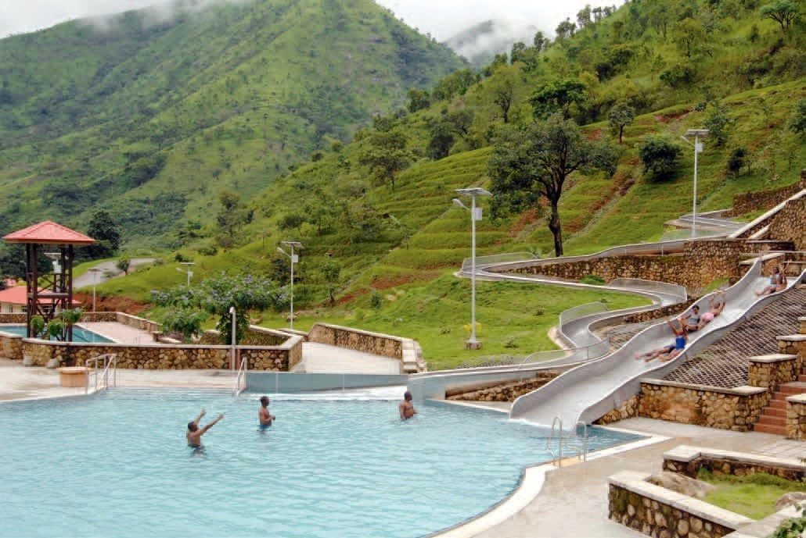
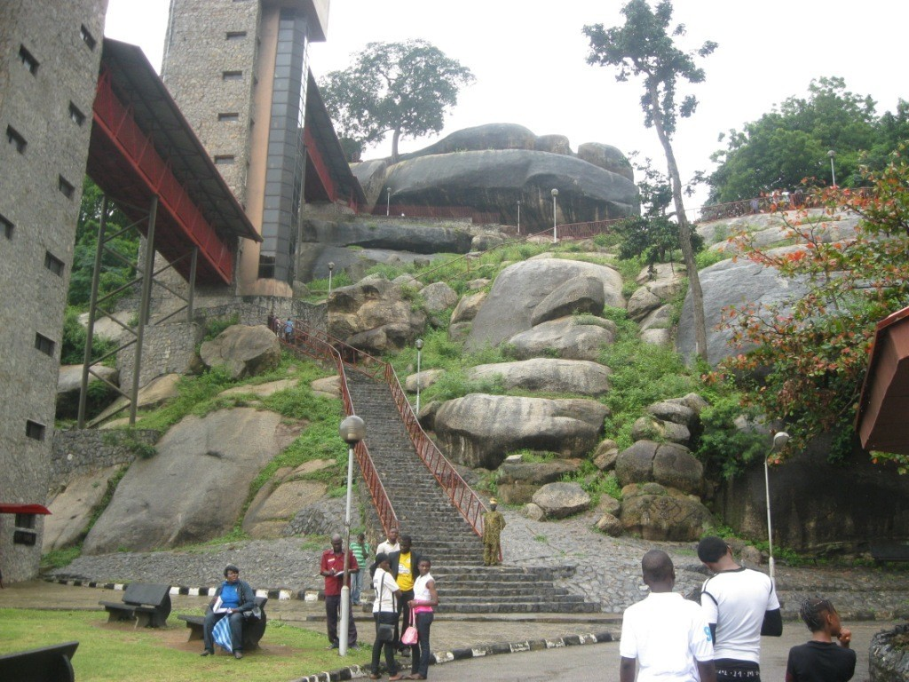
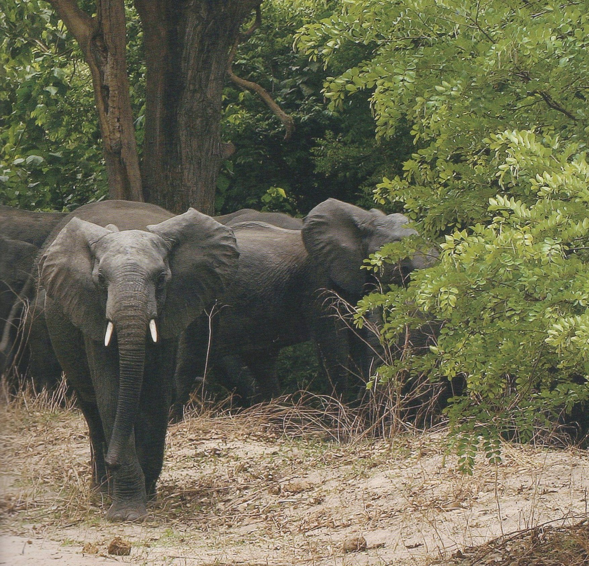
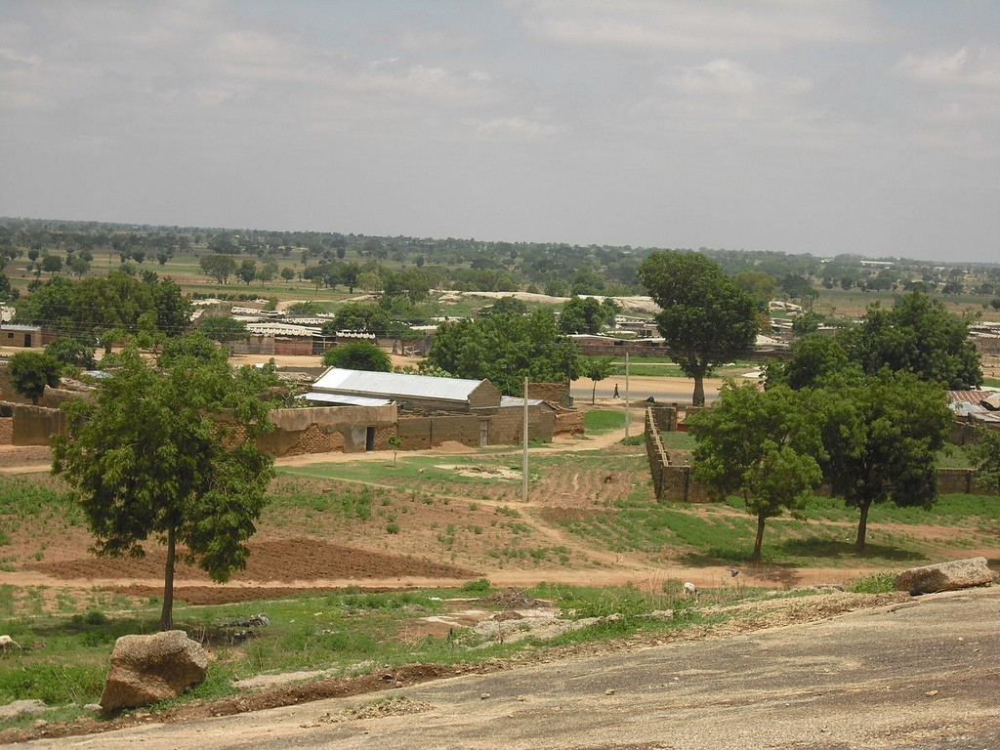

Click here to read about the Wikipwdia page of Nigeria.
 The Obudu Mountain Resort sits majestically above the sea level on the Oshie Ridge of the famous Sankwala Mountains. The idyllic tranquility, comfortable climate, beautiful scenery, and breathtaking views have made this place one of the famous tourists’ attractions in Nigeria.   Obudu Mountain Resort
Olumo Rock
Yankari Game Reserve
Idanre Hills

Chad Basin